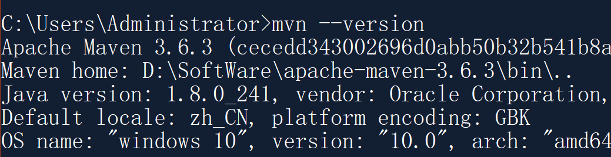

购买几个特殊含义的域名：数学常数或者公式，例如： 314
小工具：查号吧、Nice Tool+、
Linux管理：宝塔面板
购买几个特殊含义的域名：数学常数或者公式，例如： 314
小工具：查号吧、Nice Tool+、
Linux管理：宝塔面板
参照Python文档修改
Python特点：动态类型 and 强类型
动态类型（自动跟踪你的类型而不要求声明）
强类型（只能对对象进行适合该类型的有效操作）
1 | # 旧电脑导出 |
》结尾：用分号或者换行(更佳)
》缩进：同一缩进量的语句块是一组程序语句,称为块suite
》换行输入：末尾加反斜杠\,换行写
》注释：
单行注释：# Comment
多行注释：’’’ Comment ‘’’
中文注释：# coding=utf-8
导入库：
1 | import moduleName as mN |
安装库：
安装自编库: py文件放入”sys.path[3]”dir
pip安装: pip install moduleName
发布库：pip
Standard Libraries 标准库：
| 库 | 功能 |
|---|---|
| timeit | Measure execution time of small code snippets |
说明：本文档按Typora官方文档结构组织，Typora采用Github Flavored Markdown
better to use enter making two single lines to begin a new Paragraph.
use from one to six # to differ the header level
1 | # 一级标题 |
use > and support nestblocked block quote by continuing to write a sub >
1 | > 鲁迅说： |
1 | ~ unordered list, use * or + or - |
1 | ``` java |
1 |
|
find more about this
1 | ~ in second line to use :--, --:, :--: to make left, right, or center-aligned |
1 | “一览众山小”[^fn1]和“不识庐山真面目，只缘身在此山中”[^fn2]是学习的两种状态，它们是时刻共存的。 |
use * or —- to draw a horizontal line.
find more about this
enter [toc] to make a catalog.
1 | ~ Inline Links |
1 |  |
PS: about specify a URL prefix via editing YAML Front Matter while building website.
1 | ~ use * or _ to emphasis(to be italic) |
1 | ~ write code within a normal paragraph |
~~Mistaken text.~~ becomes Mistaken text.
1 | $\lim_{x \to \infty} \exp(-x) = 0$ |
just support in Typora if you enable it in setting.
1 | <u>s</u> |
<video src="x.mp4"/>
HTML Tag、转义、公式
mermaid: Doc, online Editor
gantt dateFormat YY-MM-DD title Adding GANTT diagram to mermaid excludes weekdays 14-01-10 section A section Completed task :done, des1, 14-01-06,14-01-08 Active task :active, des2, 14-01-09, 3d Future task : des3, after des2, 5d Future task2 : des4, 13-01-09, 50000000d
向量积
三阶矩阵
分段函数
pie
title 时间
"学习" : 90
"娱乐" : 10进度：Have Finished P3
网络诈骗：
行为：
例子:
铁人王进喜信息泄露，日本投标成功
央视315晚会：
某年：AI骚扰电话、wifi探针盒子2-原理、


1-严重性. 1G内容≈5亿汉字 ↩
2-原理. 设备打开wifi，发送寻找信号，探针盒子接受，并识别该设备的MAC地址，而MAC地址可通过大数据转化为IMEI号，再转化为手机号码. ↩
3-全称. Advanced Pesistent Threat ↩
问题：什么是会计
利润只与买东西有关。
资产负债表balance sheet，利润表income statement，现金流量表cash flow statement。
说明：几乎所有国家都要求做这三张报表
会计的公司视角：三件事
举例：注册工厂->厂房建设->原料购买、工人招聘->生产启动->获得应收账款（不是现金，是权利）
抽象：钱的流动
考虑：
资产负债表

应收账款Account Receivable：是权利，为了增加行业竞争力，客户吸引力。
其它应收账款Other Receivable：中国特色的，如临时借给其它公司资金作周转（无利润，非投资，非贷款），出差备用金
预付账款Prepaid account：交付定金或者全部货款，是权利，到期拿钱是收款权利，到期拿不到货是收款权利。
待摊费用Deferred expenses：资产，时间流逝中减少，如预付房租，预付广告费
存货Inventory：卖出去变成应收账款，再变成现金
资产和费用：前者花费后换来一个未来有用的东西（使用中逐渐转化为费用），后者花完就没了
非流动资产Noncurrent assets：多个循环变成现金的，如机器
流动资产Current assets：一个循环变成现金，如原材料
固定资产Fixed assets：价值高，时间长，使用中产生损耗（折旧）
长期投资Long-term investment：参股其它公司、投资子公司、购买债券
无形资产Intangible assets and other assets：专利权、版权、（中国特色）土地使用权
（土地在中国不能被个人或企业拥有，即无法作为fixed assets，但是可以被使用，即作为Intangible assets and other assets）
分析原理-看源码
说明：注意快捷键冲突，熟悉IDEA界面
| 快捷键 | 功能 |
|---|---|
| ctrl+B | Goto Declaration |
| ctrl+alt+L | format code |
| ctrl+Q | 显示简介 |
Web：网页开发，从服务器上取资源
静态Web：html，css
动态Web：提供差异的信息，不同时间，不同用户
Java中，动态Web开发的技术统称Java Web
Web应用程序：可提供浏览器访问的程序
*.htm, *.html, 如果服务器中存在，可以直接读取，通信：

缺点：
页面动态展示：“Web页面展示效果因人而异”

缺点：
优点：
可以动态更新，所有用户不同界面
和数据库交互（数据持久化，用户交互）

ASP：
1 | <h1> |
php：
JSP+Servlet：
…others
IIS
微软的，ASP，Win自带的
Tomcat
Tomcat是Apache 软件基金会（Apache Software Foundation）的Jakarta 项目中的一个核心项目，由Apache、Sun 和其他一些公司及个人共同开发而成。由于有了Sun 的参与和支持，最新的Servlet 和JSP 规范总是能在Tomcat 中得到体现，Tomcat 5支持最新的Servlet 2.4 和JSP 2.0 规范。因为Tomcat 技术先进、性能稳定，而且免费，因而深受Java 爱好者的喜爱并得到了部分软件开发商的认可，成为目前比较流行的Web 应用服务器。
Tomcat 服务器是一个免费的开放源代码的Web 应用服务器，属于轻量级应用服务器，在中小型系统和并发访问用户不是很多的场合下被普遍使用，是开发和调试JSP 程序的首选。对于一个初学者来说，可以这样认为，当在一台机器上配置好Apache 服务器，可利用它响应HTML{（标准通用标记语言下的一个应用）页面的访问请求。实际上Tomcat是Apache 服务器的扩展，但运行时它是独立运行的，所以当你运行tomcat 时，它实际上作为一个与Apache 独立的进程单独运行的。
Tomcat 实际上运行JSP 页面和Servlet。目前Tomcat最新版本为9.0.31。
工作三到五年之后，可以尝试手写Tomcat服务器。（三天就行）
下载tomcat：
进入jdk，查看rt.jar和src.zip

启动，关闭Tomcat，访问：.\bin\start.bat, .\bin\shutdown.bat, localhost:8080
可能问题：

servel.xml修改：
1 | <Connector port="80" protocol="HTTP/1.1" |
1 | <Host name="www.wyc.com" appBase="webapps" |
高难度面试题：
请谈谈如何网站是如何访问的？
输入一个域名；回车
检查本机hosts配置文件有无这个域名映射

不会就先模仿
将网站放在webapps文件夹下：
1 | --webapps:Tomcat服务器的web目录 |
http（超文本传输协议）是一个简单的请求-响应协议，它通常运行在TCP之上。
https：安全的，port-443
client—request—>server
百度：
1 | Request URL: https://www.baidu.com/ |
1 | Accept:text/html |
请求行：
请求方式：GET，POST，HEAD，DELETE，PUT，TRACT
Post请求：{编码格式：application/x-www-form-urlencoded, multipart/form-data}
1 | Accept:告诉浏览器，它所支持的数据类型 |
server—response—>client
百度：
1 | Cache-Control: private |
1 | Accept:告诉浏览器，它所支持的数据类型 |
| 状态码 | 作用 |
| ——— | ————— |
| 1 | 信息响应 |
| 2 | 成功响应 |
| 3 | 重定向 |
| 4 | 客户端响应 |
| 5** | 服务端响应 |
| | |
^(*￣(oo)￣)^：200响应成功，404资源不存在，500服务器代码错误，502网关错误

常见面试题：
从浏览器中输入URL并回车的一瞬间到页面能够显示回来，经历了什么？（伴随整个Spring Web学习过程加深）
Why：
在java web开发中，需要使用大量jar包，需要手动导入
Maven辅助以自动导入和配置jar包
Maven的核心思想：约定大于配置
Maven规定如何编写java代码
设置如下环境变量：

镜像：加速访问
国内选用阿里云，直接百度搜索《MAVEN+阿里云》
conf\setting.xml-Tagmirrors
1 | <mirror> |
本地仓库，远程仓库
创建仓库文件夹maven_repo并配置如下：
1 | <localRepository>D:\SoftWare\apache-maven-3.6.3\maven_repo</localRepository> |


^(*￣(oo)￣)^：IDEA能识别MAVEN路径，是因为配置了环境变量

观察MAVEN仓库中多了什么东西

项目创建成功后，检查Maven配置

不选择模板，直接创建

注意，此项目下无webapps目录，因为只有在web项目中才有。


pom.xml是Maven的核心配置文件

1 |
|

百度搜索：Maven仓库，获得dependency信息
^(*￣(oo)￣)^：Maven由于其约定大于配置，我们写的配置文件，可能出现无法被导出或者生效的问题，解决方案
1 | <build> |


查看日志：Help-Show Log in Explorer
Maven版本问题
最新版本存在兼容性问题，换个低版本
Tomcat闪退
IDEA中每次都要重复配置Maven
在IDEA中的全局默认配置中修改

Maven项目中Tomcat无法配置
Maven默认Web项目中的web.xml版本问题

替换为4.0版本，保持与tomcat一致（去tomcat下的项目中复制即可）
Maven仓库的使用
编写servlet类，extends HttpServlet，配置相应包。


继承Servlet接口+Servlet实现类的部署=创建相应的动态资源
Servlet有两个默认实现类——HttpServlet和GenericServlet

导入相关的库
1 | <!-- https://mvnrepository.com/artifact/javax.servlet/javax.servlet-api --> |
也可手动下载放到maven的仓库文件夹maven-repo中
工程创建：
构建一个普通Maven项目，删掉src目录，后续学习在这个项目中建立module；称此工程为Maven主工程
Maven父子工程：
1 | <modules> |
1 | <parent> |
Maven环境优化:
编写一个servlet程序：编写一个类，继承HttpServlet
1 | public class HelloServlet extends HttpServlet { |
编写Servlet的映射
Why映射：编写的是java程序，但访问通过浏览器，而浏览器需要连接web服务器。所以需要在web服务中注册Servlet。并给予浏览器能够访问的路径。
1 | web.xml中修改 |
Tomcat配置：


一个Servlet对应一个映射路径
一个Servlet对应多个映射路径
1 | <servlet-mapping> |
一个Servlet对应指定通用映射路径
1 | <servlet-mapping> |
指定一些后缀和前缀等等
1 | <servlet-mapping> |
优先级问题
servlet-mapping中优先匹配非通用路径。
1 | <!-- 优先级: /hello = /hello1 > /hello/* = /hello1/* > /* --> |
web容器启动时，它会为每个web程序创建一个对应的ServletContext对象，它代表当前的web应用：
共享数据：后面会用Session或者request一些方法替代之
一个servlet中保存的数据，另一个servlet可以获取。

1 | // Servlet1 to set username |
获取初始化参数：几乎不用下法
1 | <!-- web.xml设置 --> |
1 | // ServletDemo中设置 |
请求转发：用request去做
1 | // 转发到/demo3的页面上，但url不变 |
读取资源文件：用类加载，反射
Properties
发现：都被打包到同一个路径（classes）下，此路径俗称classes路径
思路：需要一个文件流
1 | protected void doGet(HttpServletRequest req, HttpServletResponse resp) throws ServletException, IOException { |
Web Server接受到Client的请求，会创建代表响应和请求的一个HttpServletResponse对象和一个HttpServletRequest对象：
向Browser发送数据的方法
1 | public ServletOutputStream getOutputStream() throws IOException; |
向Browser发送请求头的方法
1 | void setCharacterEncoding(String var1); |
响应的状态码
1 | int SC_CONTINUE = 100; |
向浏览器输出信息（略，一直进行的内容）
下载文件
1 |
|
验证怎么来？
1 | protected void doGet(HttpServletRequest req, HttpServletResponse resp) throws ServletException, IOException { |

重定向：一个web资源A收到客户端请求后，它会通知客户端去访问另外另一个web资源B
常见场景：
用户登陆
1 | public void sendRedirect(String location) throws IOException; |
测试：
1 | /* |
面试题：重定向和转发的不同
相同点：实现页面跳转
不同点：请求转发url不会变化，重定向url会变化
应用：表单提交并转发
1 | <%--这里提交的路径，需要寻找到项目路径--%> |
1 | protected void doGet(HttpServletRequest req, HttpServletResponse resp) throws ServletException, IOException { |
1 | <h1>success</h1> |
HttpServletRequest代表客户端的请求，用户通过http协议访问服务器，HTTP请求中的所有信息会被封装到HttpServletRequest,通过该对象，可以获得客户端的一切信息。
| 命令 | 用处 |
|---|---|
| hexo g | |
| hexo d | |
| hexo clean | 更新不了就用这 |
| 重复、等待、刷新 | 无法解决 |
| hexo new | |
域名解析：实名认证+网站备案(服务器有效期超三个月)
github pages更新延迟时间较长，须耐心等待！
域名过期前，且不打算续期，须要注销备案，防止被抢注。
域名过期取消接入，被强注，无法取消备案——搞了一圈，不如直接找阿里云客服
Hexo官方中文文档、Next主题官方文档、Font Awesome、免费图床
其它建站：Hugo，wordpress、Vue Press
环境: Node.js-xxx, Git, hexo-4.2.0, Next-xxx，typora
https登陆：hexo项目添加CANME（避免git push删除），github项目setting中选择强制https
MathJax：设置
1 | 文件结构 |
参考：hexo-neat
1 | # 第一次实测，压缩前46.7MB，压缩后 |
1 | # 修改在next\source\css\_schemes\Pisces\_layout.styl |
说明：图片显示由hexo中的fancybox插件提供，注意该插件在firefox显示有问题。
hexo_blog/source/images（必须叫images）
typora-文件-偏好设置-图像-如下设置：也可以不加/${filename}，所有笔记图片存放一起
YAML Front Matter添加(每个文件都得如此b>）：等同typora-格式-图像-设置图片根目录-选择next/source
1 | typora-root-url: .. |
图床：选用豆瓣（禁止外链），修改
1 | # next/layout/_layout.swig中添加 |
hexo图标采用了fontawesome，但是使用中显示会有问题（暂未查清）。
创建github分支，保存hexo_blog源文件夹，详情以后再补🙅。
首页摘要：
title: 让首页显示部分内容
date: 2020-02-23 22:55:10
1 |
|
动画效果：网页背景，next/_config.yml中设置
1 | #关闭以加速网页显示 |
本地搜索：选择微搜索
脚注去除：next\layout_partials\footer.swig修改
导航页：用于自己的工具记录
目录展开：next/source/css/_custom/custom.stl
1 | .post-toc .nav .nav-child { display: block; } |
需要在source下生成404.html，否则使用github默认404页